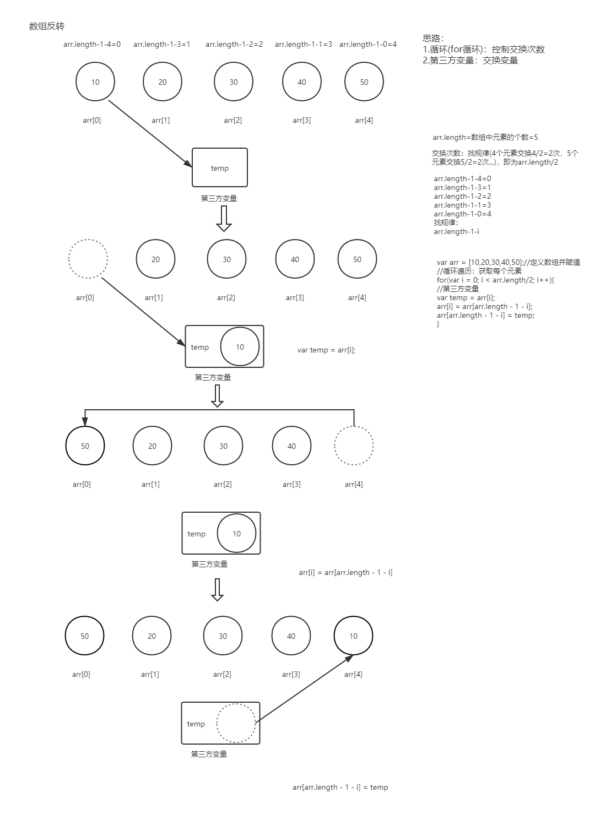

<!DOCTYPE html>
<html lang="en">
<head>
    <meta charset="UTF-8">
    <meta http-equiv="X-UA-Compatible" content="IE=edge">
    <meta name="viewport" content="width=device-width, initial-scale=1.0">
    <title>Document</title>
</head>
<body>
    <script>
        //数组反转：数组元素为10 20 30 40 50,要求最后结果是50 40 30 20 10
        var arr = [10,20,30,40,50];
        //循环：控制交换次数
        for(var i = 0; i < arr.length / 2; i++){
            //第三个变量(用第三方变量进行交换两个变量)
            var temp = arr[i];
            arr[i] = arr[arr.length - 1 - i];
            arr[arr.length - 1 - i] = temp;

        }
        console.log(arr);
        //***** 重点是思想


        // 练习
        // 循环：控制交换次数
        for(var i = 0; i < arr.length / 2; i++){
            //第三方变量
            var temp = arr[i];
            arr[i] = arr[arr.length - 1 - i];
            arr[arr.length - 1 - i] = temp;
        }
        console.log(arr);


        //画图
        document.write("");
        /*
        循环：循环的目的是控制交换次数
        交换的次数=元素个数的一半=arr.length/2(4个元素交换2次，5个元素交换2次)
        第三方变量：存放交换的值(交换两个变量)
        */

    </script>
</body>
</html>